Complete feature documentation — audit existing ads, score them with AI, and generate optimised Responsive Search Ad assets
The AI RSA Ad Builder is an end-to-end tool for improving Responsive Search Ad performance. It combines automated asset auditing, a 6-dimension quality scoring engine, and Claude AI to give you both a diagnosis of your current RSA and a complete set of AI-generated replacement assets.
Analyses every headline and description in your current RSA, classifies each by type, flags problems, generates AI replacement suggestions, and scores the ad across 6 quality dimensions.
Builds a brand-new set of 15 headlines and 4 descriptions from scratch using Claude AI, guided by your business details, keywords, landing page content, and a specific headline-type distribution.
A proprietary score across Keyword Relevance, Uniqueness, CTA Diversity, Landing Page Alignment, Trust Signals, and Conversion Focus — with a Before / After comparison once AI recs are generated.
Auto-generates replacement headlines on load and on demand. Replacements are strategically chosen to fill the biggest score gaps, not just swap like-for-like.
Click AI RSA Builder in the left sidebar navigation. The page is account-specific — the currently selected account name and ID are displayed at the top of the page header.
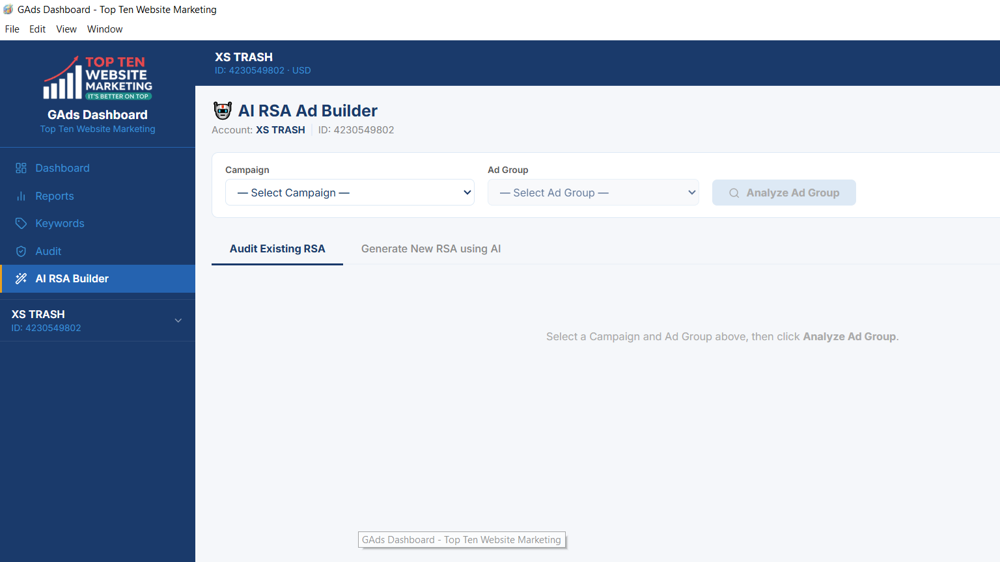
The page is divided into three main zones:
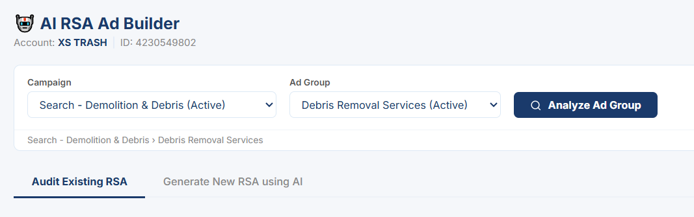
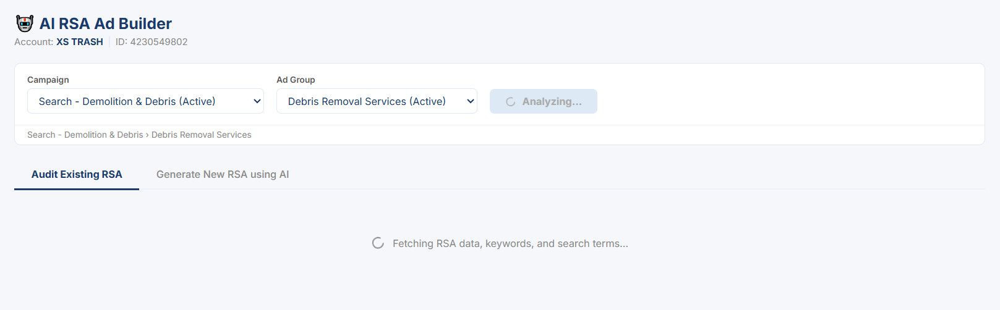
Tab 1 is the default view. After analysis completes, it displays one audit card per RSA ad found in the ad group (most ad groups have one RSA), followed by intent analysis, landing page analysis, and keywords.
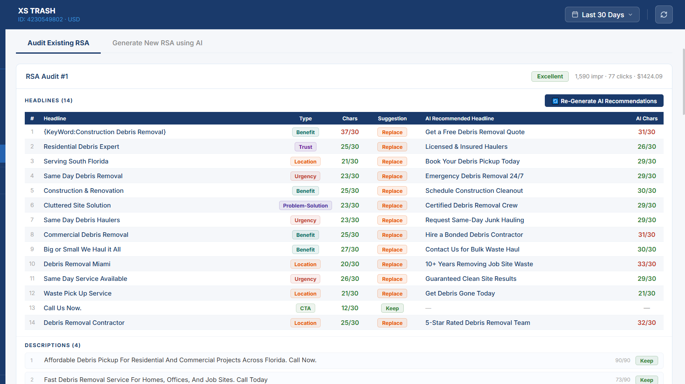
Each RSA in the ad group gets its own audit card. The card header shows:
The headlines table lists all 15 RSA headline slots with the following columns:
| # | Headline | Type | Chars | Suggestion | AI Recommended Headline | AI Chars |
|---|---|---|---|---|---|---|
| Row number | The actual headline text from your Google Ads RSA | Classified type badge — see Section 7 | Character count vs the 30-character limit. Green = within limit; Red = over limit | Audit label — see Section 8 | Claude-generated replacement for non-Keep headlines | Character count of the AI recommendation |
Appears in the top-right of the headlines section when there are non-Keep headlines. Click it to request a fresh set of AI recommendations from Claude. The new recommendations are generated using the same score-gap-driven strategy.
Below the headlines table, all 4 descriptions are listed in a simpler card layout showing the text, character count (vs. 90-character limit), and their label badge.
A colour-coded legend at the bottom of the audit card summarises all possible label values for quick reference.
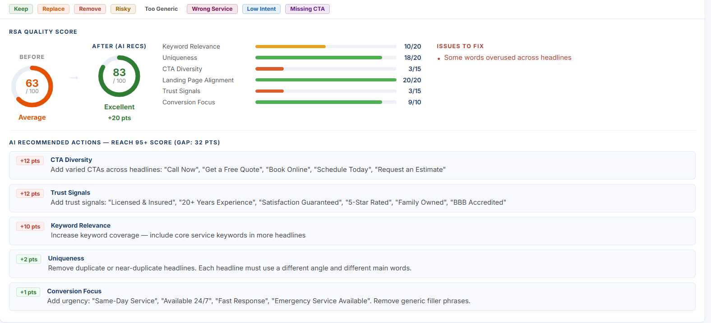
Every headline is automatically classified into one of 7 types. The classification is rule-based and runs entirely locally (no API call). The type badge appears in the Type column of the headlines table and in the generated assets view.
| Type | Badge colour | What qualifies | Examples |
|---|---|---|---|
| Keyword | Blue | Headline contains or closely matches one of the ad group's keywords | "Junk Removal Dallas", "Same-Day Junk Pickup" |
| CTA | Green | Starts with an imperative verb: Call, Book, Schedule, Request, Get, Contact, Hire, Order, Reserve | "Call for a Free Estimate", "Book Your Pickup Today" |
| Trust | Purple | Contains a credential or social proof signal | "Licensed & Insured Since 2009", "5-Star Rated Service", "15 Years Experience" |
| Urgency | Red | Contains a time-critical commitment or availability signal | "Same-Day Removal Available", "24/7 Emergency Service", "Available This Weekend" |
| Benefit | Teal | Describes a service quality outcome or positive experience (default when no other type matches) | "Hassle-Free Junk Removal", "No Mess Left Behind", "Fast & Easy Cleanouts" |
| Location | Orange | Contains a geo-specific term or matches the ad group's service area | "Serving Dallas & DFW", "Greater Houston Area", "Local Junk Haulers" |
| Problem-Solution | Indigo | Poses a question or addresses a pain point directly | "Cluttered Garage? We Clear It", "Too Much Junk?", "Tired of the Mess?" |
Each headline and description is assigned one of the following labels after the local audit:
| Label | Colour | Meaning | Action recommended |
|---|---|---|---|
| Keep | Green | Passes all quality checks — no forbidden wording, not a duplicate, not too generic, and includes either a keyword match or a CTA | No change needed. AI will not generate a replacement for Keep headlines. |
| Replace | Orange | Passes basic checks but has no CTA and no keyword match — it's not harmful but doesn't pull its weight | Review the AI recommendation and replace if the suggested headline is clearly stronger. |
| Remove | Red | Empty asset, exact duplicate of another headline in the same ad, or extremely short (<6 chars) | Delete this headline and use the AI recommendation in its slot. |
| Risky | Amber | Contains wording that signals low intent or is typically forbidden in local-service ads (cheap, DIY, curbside pickup, landfill, bulk pickup, municipal pickup) | Replace immediately — these terms attract the wrong searchers and waste budget. |
| Too Generic | Grey | A filler phrase that adds no specific value ("Best Service", "We Are #1", "Learn More", "Click Here") | Replace with a specific, benefit-driven headline. |
The RSA Quality Score is embedded at the bottom of each audit card and is computed entirely locally — it does not use Claude AI. It scores the ad on a 0–100 scale across 6 dimensions.
Two circular rings are displayed side by side:
Six horizontal bars show the contribution of each dimension to the total score:
| Dimension | Max Points | How it's measured |
|---|---|---|
| Keyword Relevance | 20 | What percentage of the ad group's keywords appear (or have a word in common) with at least one headline or description. |
| Uniqueness | 20 | Penalises duplicate headlines (−4 pts each), near-duplicates (−2 pts each), and words used in 7 or more headlines (−2 pts per overused word). |
| CTA Diversity | 15 | Counts distinct CTA-type words (Call, Get, Book, Schedule, Request, Hire, etc.) found anywhere across all assets. +3 pts per unique CTA word, capped at 15. |
| Landing Page Alignment | 20 | Measures word overlap between the ad copy and the landing page H1, H2s, and title tag. Scored 0–20 based on overlap percentage. |
| Trust Signals | 15 | Counts trust-signal patterns found in the assets: Licensed, Insured, Bonded, Certified, Guaranteed, Years, Rated, Family-Owned, Free Estimate, No Obligation, etc. +3 pts each, capped at 15. |
| Conversion Focus | 10 | Counts urgency signals (Same-Day, 24/7, Today, Emergency, Fast, Quick, etc.) +3 pts each, capped at 10. Penalises generic filler and forbidden wording. |
When the audit finds specific problems, they are listed in a red "Issues to Fix" panel next to the breakdown bars. Examples include: "Low keyword coverage in ad copy", "No trust signals (licensed, insured, years experience…)", "2 duplicate headline(s)".
AI recommendations are generated automatically as soon as analysis completes — you don't need to click anything. Claude AI receives:
Claude is instructed to choose the type that best fills the largest score gap, not necessarily match the original headline's type. For example, if the score has a big gap in Trust Signals, a weak Benefit headline slot will be replaced with a Trust headline (Licensed, Insured, etc.).
When the current score is below 95, a prioritised action panel appears at the bottom of the Quality Score section. Each action card shows:
Actions are sorted by impact (largest gap first), so the most important improvements appear at the top. Examples of action messages:
Below the audit card, an Intent Analysis section shows the search terms that triggered this ad group's ads, classified by purchase intent:
| Intent Category | Description |
|---|---|
| High Intent | Terms indicating immediate purchase readiness (e.g. "junk removal near me today", "schedule junk pickup") |
| Research | Terms indicating comparison shopping or information gathering (e.g. "junk removal cost", "best junk removal") |
| Branded | Terms containing a competitor or specific brand name |
| Low Intent | Broad or off-topic terms unlikely to convert (e.g. "how to get rid of junk for free", "free dump near me") |
| Navigational | Terms searching for a specific business by name |
Warning banners appear at the top of the section when Low Intent spend exceeds a meaningful threshold of total spend, flagging potential wasted budget.
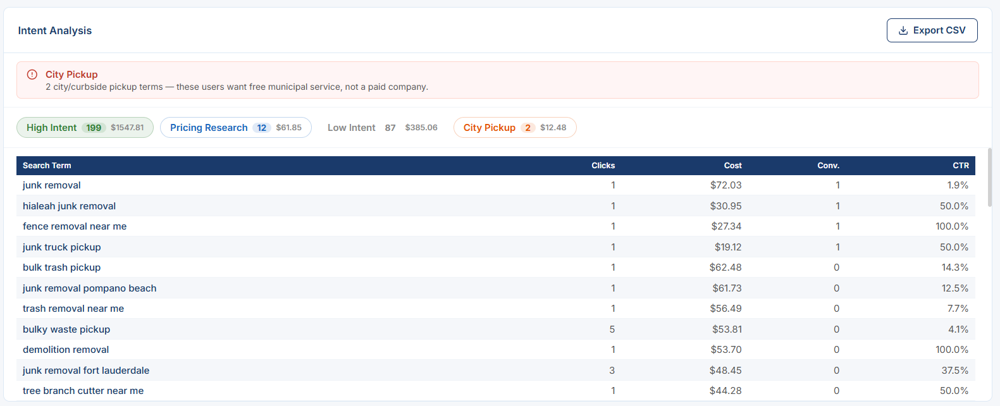
The system fetches the first unique destination URL found in the ad group's ads and analyses its content. The section shows:
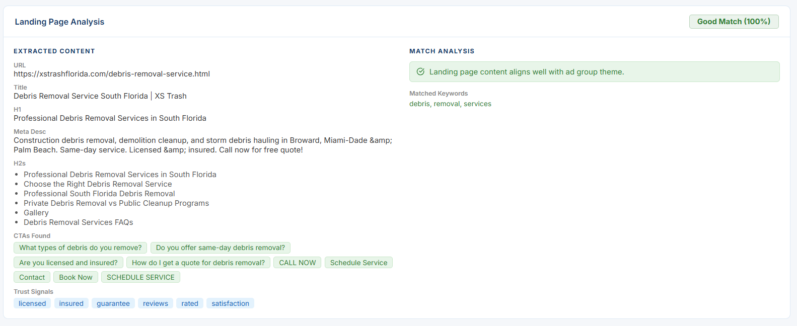
A compact keyword table at the bottom of Tab 1 shows all active keywords in the ad group with their match type, Quality Score (1–10), CPC, impressions, and clicks. This context is used by both the scoring engine and the AI recommendation prompt.
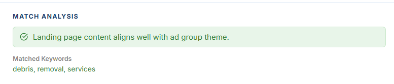
Tab 2 generates a complete brand-new RSA from scratch. It requires analysis to have been run first (to provide keyword context). Click Generate New RSA using AI in the tab bar to switch.
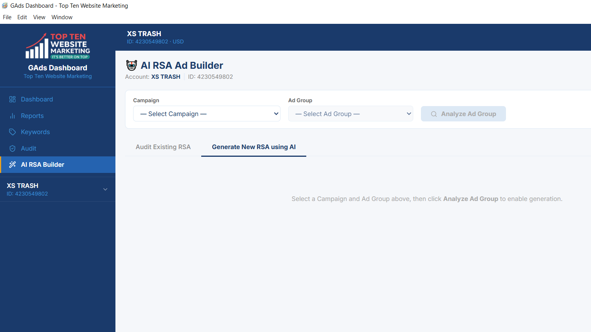
| Field | Required | Description |
|---|---|---|
| Business Name | Auto-filled | Pre-populated from the selected Google Ads account name. Read-only — not editable. Used in 1–2 headlines if the name fits within 30 characters. |
| City / Service Area | Optional | Geographic targeting context. Used to generate Location-type headlines and improve landing page alignment scoring. |
| Years in Business | Optional | Used in Trust headlines (e.g. "15 Years of Junk Removal"). Enter a number. |
| USP 1 / 2 / 3 | Optional | Your three main unique selling propositions. These are injected directly into the prompt. Examples: "Licensed & Insured", "Same-Day Service", "Free Estimates". |
| Active Promotion | Optional | A current offer to incorporate into the copy (e.g. "10% Off This Month", "$50 Off First Pickup"). |
| Tone | Optional | Controls the overall writing style: Professional (default), Urgent, or Friendly. |
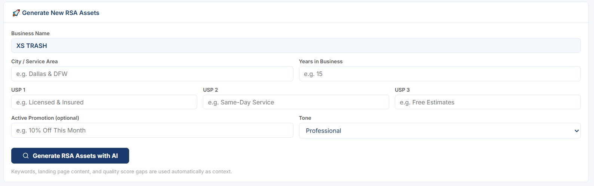
Claude is instructed to produce exactly 15 headlines with this type distribution:
| Type | Count | Focus |
|---|---|---|
| Keyword | 4–5 | Directly includes a core service keyword from the ad group |
| CTA | 3–4 (mandatory) | Must start with: Call, Book, Schedule, Get, Request, Contact, or Hire |
| Trust | 2–3 | Credentials or proof: Licensed, Insured, Rated, Years Exp, Guaranteed |
| Urgency | 2–3 | Time-critical: Same-Day, 24/7, Emergency, Available Now, Today |
| Offer / Benefit | 2–3 | Offer: Free Estimate, Flat Rate, No Hidden Fees — or — Benefit: Fast, Easy, Hassle-Free |
After Claude responds (typically 5–15 seconds), the form is replaced by the Generated Assets View showing the complete RSA with its projected quality score.
A score ring shows the projected RSA Quality Score for the newly generated asset set (computed using the same 6-dimension engine). This is the score you would expect to see after applying the generated headlines and descriptions.
All 15 generated headlines in a table with Type badge, character count, and a copy button per row. Headlines over 30 characters are flagged in red — regenerate if any are over the limit.
All 4 generated descriptions listed with their character counts (vs. 90-character limit) and individual copy buttons.
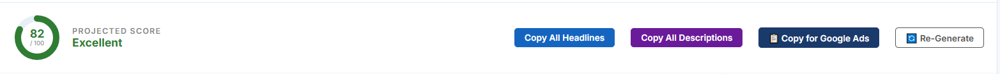
Full scoring formula breakdown for reference:
| Dimension | Max | Formula detail | How to improve |
|---|---|---|---|
| Keyword Relevance | 20 | Count of ad-group keywords that appear (by word match, >3 chars) in at least one asset. Score = (matched / min(total, 10)) × 20. | Add 2–3 Keyword-type headlines that include your top keywords verbatim. |
| Uniqueness | 20 | Start at 20. −4 per exact duplicate, −2 per near-duplicate, −2 per word appearing in 7+ headlines (>4 chars). | Vary your vocabulary. A 15-headline RSA about junk removal will naturally repeat "junk" and "removal" — that's fine. Avoid repeating minor descriptors like "fast" in 8 headlines. |
| CTA Diversity | 15 | Count of unique CTA-pattern words found anywhere in all assets. +3 per distinct CTA word, capped at 15. | Use 3–4 different imperative verbs: Call, Book, Schedule, Request, Get. Don't use the same verb twice. |
| Landing Page Alignment | 20 | Word overlap between all ad assets and the LP's H1 + H2s + title. Score = (overlap / total-ad-words) × 60, capped at 20. | Mirror the language on your landing page. If the LP says "junk hauling," use "hauling" in at least one headline. |
| Trust Signals | 15 | Count of trust-signal regex patterns found in any asset. +3 per match, capped at 15 (5 distinct signals max). | Add headlines with: Licensed & Insured, X Years Experience, 5-Star Rated, Satisfaction Guaranteed, Family-Owned. |
| Conversion Focus | 10 | Count of urgency-signal patterns. +3 per match, capped at 10. Deductions for generic filler assets. | Use: Same-Day, 24/7, Today, Emergency, Available Now. Each urgency word in any asset counts once. |
Both Campaign and Ad Group must be selected. The button is also disabled during loading.
The After ring only appears after at least one AI recommendation has loaded. If no recommendations appear after 30 seconds, check that a Claude API key is set in Settings and look for an error banner beneath the headlines table.
The character count in the "AI Chars" column turns red for over-limit headlines. Click Re-Generate AI Recommendations — Claude re-counts carefully each time, but occasionally misjudges. A fresh generation almost always fixes this.
Common reasons: no keywords in the ad group matched against the headlines (Keyword Relevance = 0), no landing page data loaded (Landing Page Alignment defaults to 10), or the ad has no trust signals whatsoever. The Issues to Fix panel will identify the exact problems.
The generator requires analysis to have been run first. Go to Tab 1, run Analyze Ad Group, then switch back to Tab 2.
Use Copy All Headlines to copy all 15 to clipboard, then paste them directly into the Google Ads RSA editor. For individual headlines, use the per-row copy button.
Certain words attract low-quality traffic for local service businesses: cheap, DIY, do-it-yourself, curbside pickup, bulk pickup, city pickup, municipal pickup, dump near me, waste site, landfill. These are common in junk removal ads but drive searchers who want free or city services, not paid professional removal.
No. "Free Estimate" is a legitimate RSA headline. The word free was removed from the forbidden patterns because it occurs naturally in high-quality service-business headlines. Only genuinely low-intent phrases remain forbidden.
AI RSA Ad Builder · GAdsDashboard V2 · Top Ten Website Marketing · Documentation generated May 2026